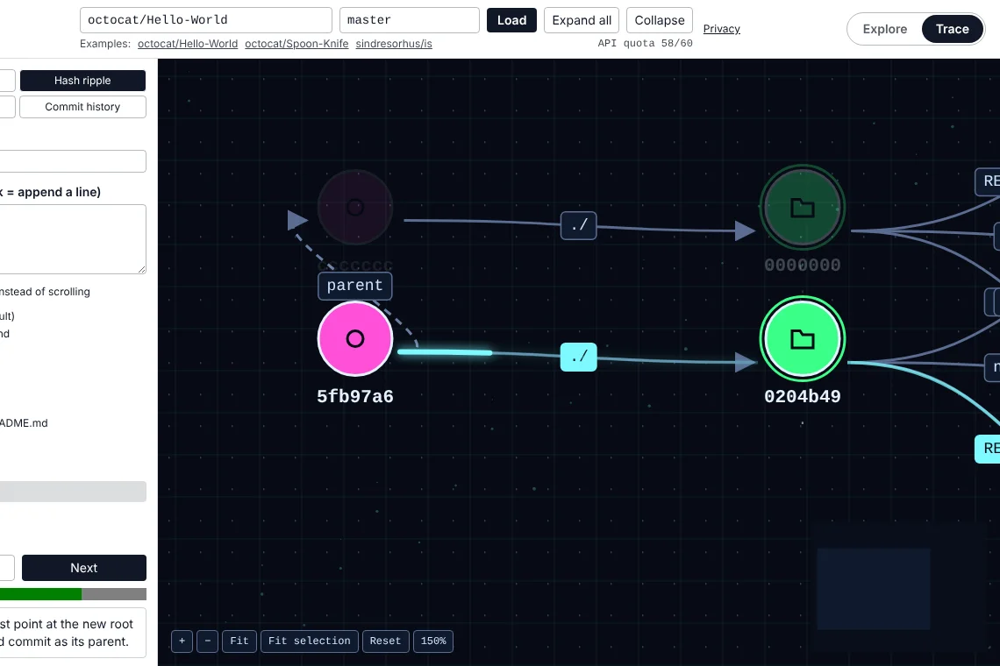
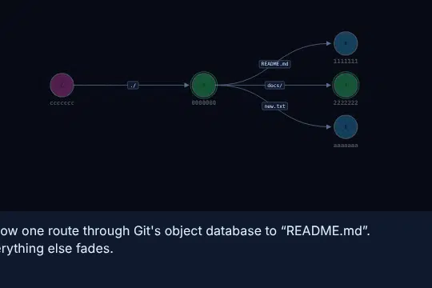

Plumbline
Paste any GitHub repo and watch it become a map of commits, trees and blobs. Git, finally without the hand-waving.
- Status
- Ready to launch
- Platform
- Web
- Role
- Solo — product, design, build
- Year
- 2026

What it is
See how Git stores your data.
Plumbline renders any GitHub repository as an interactive map of Git objects: commits, trees and blobs, in a simplified teaching model.
Explore it freely, or switch to Trace and let the page scroll become a timeline. Edit a file and watch real SHA-1s ripple up from the blob to the commit, while everything untouched stays put and gets reused.
It's for anyone who has typed git commands for years and quietly wondered what's going on in there. Same content, same object. It clicks surprisingly fast once you can see it.
Features
What it does.
Explore any repo
Pan, zoom and search by path, SHA prefix or extension. Diff two refs and copy the matching git commands.
Trace, by scrolling
Scroll through four short stories: path resolve, hash ripple, dedup and commit history. Scroll back to rewind.
Real hashes
SHA-1s are computed with Git's own object format and checked against the git binary in tests. No pretend maths.
History view
A commit graph with merges, where unchanged subtrees are literally the same node. Compare any two commits.
Share and export
The whole view lives in the URL. Export SVG, PNG or JSON, or an animated GIF of a Trace.
Private, if you want
Public repos need no login. For private ones the token stays in an encrypted cookie, never in page JavaScript.


Built with
- Next.js
- React
- TypeScript
- Tailwind CSS
- React Flow
- GSAP
- Zustand
- ELK
- Zod
- Vitest
- Playwright